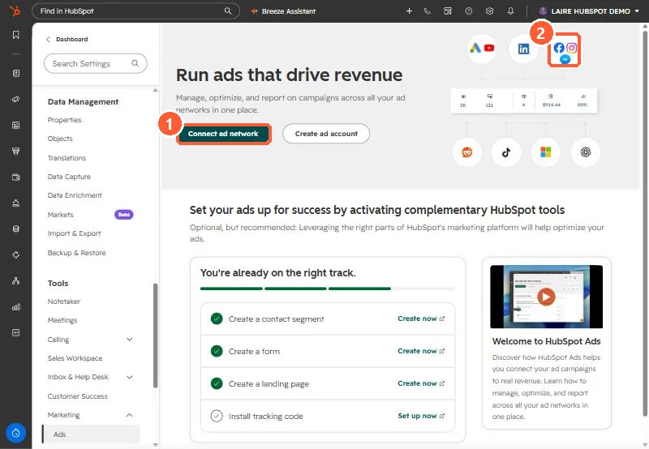

Short answer
Connect ad accounts under Settings, Marketing, Ads. Lead syncing brings Facebook and LinkedIn lead form submissions into HubSpot as form submissions you can use in segments and workflows; new leads can take up to two hours, and most "no leads" problems are missing Leads Access in Meta or the wrong sync timeframe. Audiences turn website visitors, contact segments (Marketing Hub Starter and above) or LinkedIn target accounts into ad audiences that sync with Facebook, Google, Microsoft and LinkedIn. A Meta lookalike needs a source audience that has already synced. Reddit Ads connects as a beta.
1. Connect an ad account
Open Settings, Marketing, Ads and click Connect ad network (1). Supported networks are shown as icons, including Meta (2), LinkedIn, Google, Microsoft and Reddit. My demo portal has no ad accounts, so it shows the connect prompt.


For lead syncing, connect with a user who has Leads Access on the Facebook page. After connecting, the Lead syncing tab appears.
2. Sync Facebook and LinkedIn lead ads
In Lead syncing, connect the Facebook page or LinkedIn ad account. HubSpot then creates a version of each active lead form:
- The forms do not show in the forms tool, but their submissions log as form submissions you can use in segments and workflows.
- Default Facebook fields always map to the matching HubSpot property. Custom questions can be remapped, and the field types must match or the Lead syncing tab shows errors.
- One workflow can cover many ads if its trigger lists each synced lead form.
- Archive the form in Meta to stop syncing it.
- New leads can take up to two hours to arrive.
3. When leads do not arrive
| Cause | Fix |
|---|---|
| No Leads Access in Meta business manager when you connected | New leads sync once you have it. Reconnect to pull older leads. |
| HubSpot is not the selected CRM in the page's CRM setup in Meta | Select HubSpot there. |
| The form was made in a different Meta account or runs under another page | The form must be created in the connected account and run under the connected page. |
| Sync timeframe set to New leads | Disconnect and reconnect with All leads to get history. |
| Field type mismatch on a custom question | Fix the mapping on the Lead syncing tab. |
If you use double opt-in, contacts from lead ad forms get the confirmation email too, see subscriptions and opt-outs.
4. Ad audiences
Go to Marketing, Ads, Create audience. Audiences sync both ways with the ad network.
| Audience | Based on | Needs |
|---|---|---|
| Website visitors | People who visited your site or certain pages | Tracking code on the site |
| Contact segment | A HubSpot contact segment | Marketing Hub Starter or above; marketing contacts |
| LinkedIn company segment | Target accounts or a company profile tier | LinkedIn ad account |
| Lookalike (Facebook) | An existing audience that has already synced to Meta, plus target locations | Marketing Hub Starter or above |
- HubSpot recommends contact segments that include a legal basis for processing. Google and Facebook add their own conditions, such as Customer Match policy, EU consent and business manager requirements.
- The Size column shows the matched size: people the network matched to its users. It is usually much lower than your contact or visitor count.
- Only marketing contacts can be added to ad audiences. See marketing contacts.
- HubSpot's own lookalike segments in the CRM are a separate feature you can use in emails and ads.
Using an audience on LinkedIn: after creating it in HubSpot, open LinkedIn Campaign Manager, and under Who is your target audience? select Audiences in a new or existing campaign. It is used once the campaign is published or updated.
5. Reddit Ads
Settings, Marketing, Ads, Ad accounts, Connect account, Reddit Ads. Log in to Reddit, review the permissions, and click Continue; HubSpot needs all of them. HubSpot's KB lists the integration as a beta. Once connected:
- Reddit campaign reporting sits with your other ad networks.
- Contacts and deals can be attributed to Reddit campaigns.
- Contacts who interact with the ads can be enrolled in workflows.
Hover the account and use Actions to see details such as auto-tracking and primary users. Reddit as a social publishing channel is a separate connection.
6. What is changing for 2027
- More networks. Reddit joined Meta, LinkedIn, Google and Microsoft in the ads tool, as a beta.
- Account-based audiences. LinkedIn company segment audiences sync target accounts or company tiers directly, without building a contact list first.
- Consent conditions. HubSpot recommends segments that include a legal basis for processing, and Google and Facebook apply Customer Match and EU consent conditions. Record legal basis on contacts you plan to advertise to.
Common questions
Facebook leads are not showing up in HubSpot.
Wait two hours, then check Leads Access in Meta, that HubSpot is the selected CRM for the page, and the sync timeframe. Reconnect with All leads to pull history.
Where are my lead ad forms in the forms tool?
They are not listed there. Their submissions still log on contacts and can trigger workflows.
Why is my audience so much smaller than my segment?
The Size column shows how many people the ad network matched. Many contacts do not match a user on that network.
Can I build a lookalike from a segment I just created?
Not until the source audience has synced to Meta.
Sources
- HubSpot Knowledge Base: Connect and set up your ad accounts
- HubSpot Knowledge Base: Sync leads from your lead ad forms
- HubSpot Knowledge Base: Facebook lead ads FAQ
- HubSpot Knowledge Base: Troubleshoot syncing leads from Facebook pages
- HubSpot Knowledge Base: How lead ad fields map to HubSpot properties
- HubSpot Knowledge Base: Create ads audiences in HubSpot
- HubSpot Knowledge Base: Create lookalike segments
- HubSpot Knowledge Base: Target LinkedIn ads using HubSpot audiences
- HubSpot Knowledge Base: Connect your Reddit Ads account